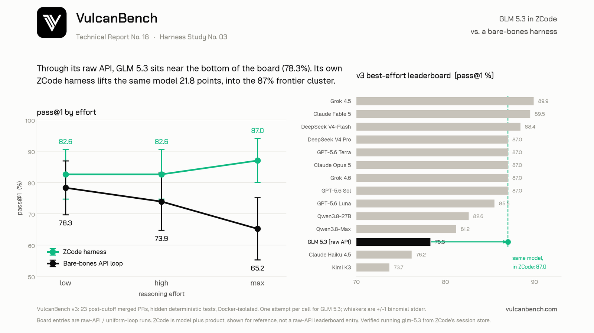

Same model, 21.8 points apart: GLM 5.3 scores 65.2% through its raw API at max effort and 87.0% inside Z.ai’s own ZCode harness. The effort knob points opposite directions on the two systems: the raw API inverts, 78.3% to 73.9% to 65.2% as effort rises, while ZCode holds and then climbs, 82.6% to 82.6% to 87.0%. Even ZCode’s worst column beats the raw API’s best. The gap is unfinished work, not worse work: eighteen of the raw loop’s nineteen failures are runs cut off by the wall clock, while ZCode never times out and every one of its eleven failures is a finished wrong answer. On the v3 best-effort board, the raw-API number lands twelfth of fourteen; the same model inside its own product sits in the 87% frontier cluster.

| Effort | In ZCode | Bare-bones API | Delta | ZCode time/task | API time/task |
|---|---|---|---|---|---|
| low | 82.6% ±7.9 | 78.3% ±8.6 | +4.3 | 4.8 min | 8.4 min |
| high | 82.6% ±7.9 | 73.9% ±9.2 | +8.7 | 4.6 min | 13.5 min |
| max | 87.0% ±7.0 | 65.2% ±9.9 | +21.8 | 5.3 min | 22.8 min |
System A (bare-bones) is the z.ai API through VulcanBench’s minimal
reference loop, effort sent per request as reasoning_effort. System B is ZCode’s own agent driven headlessly,
the thought level pinned per run through its project configuration and read back from its session store as proof of what
executed. One attempt per task per level per system; both systems are graded by the same deterministic hidden tests in Docker.
pass@1 is the per-task success rate and times include provider latency. Only the max-effort gap exceeds the combined
uncertainty of its pair, but the ordering holds at every level, and the failure-mode split below is categorical, not
statistical.
The harness is worth 21.8 points at the default setting. Max is the effort level GLM 5.3 ships with, so an untuned API integration gets 65.2% while Z.ai’s own product gets 87.0% from the identical weights. Even ZCode’s worst column (82.6%) beats the raw API’s best (78.3%): there is no effort setting at which the bare loop catches the product.
The effort knob points opposite directions. Raw, the knob runs backward, 78.3 to 73.9 to 65.2, the same inversion Reports No. 12 and 14 documented for Qwen and Grok. Inside ZCode the same knob holds flat and then rises. The spread across the knob is 4.4 points in ZCode against 13.1 raw: as in Report No. 15, which harness you use matters more than which effort you pick.
The failure modes split perfectly. Across all three raw-API columns, eighteen failures are wall-clock timeouts and exactly one is a finished wrong answer; the model reasons until the budget ends, and higher effort makes it worse (8.4 to 22.8 min/task). ZCode is the mirror image: zero timeouts at any level, eleven finished wrong answers, and about five minutes per task regardless of effort. The raw loop’s deficit is unfinished work, not bad work, and the product harness removes it entirely.
Three tasks the raw API never finishes, ZCode completes every time. networkx-leiden-communities, pennylane-trotter-fragmented, and sqlglot-canonicalize-internal-names time out at all three raw levels. ZCode solves the first two (pennylane at max, a task the raw API has never finished and Qwen never solved in Report No. 12), and on the third it at least returns an answer. That task remains solved only by Grok Build in Report No. 16.
The board placement tells the story in one line. As a raw-API entry, GLM 5.3’s best (78.3% at low) lands twelfth of fourteen on the v3 best-effort board, between Qwen3.8-Max and Claude Haiku 4.5. The same model inside ZCode scores with the 87% frontier cluster: Claude Opus 5, DeepSeek V4 Pro, Grok 4.6, GPT-5.6 Sol and Terra. The subscription number is model plus product and never joins the board; the distance between the two is the point.
| Task | API low | API high | API max | ZCode low | ZCode high | ZCode max |
|---|---|---|---|---|---|---|
| pennylane-trotter-fragmented | T | T | T | W | W | S |
| networkx-leiden-communities | T | T | T | S | S | W |
| sqlglot-canonicalize-internal-names | T | T | T | W | W | W |
| sqlglot-iso8601-nanos | T | T | S | S | S | S |
| aiohttp-upgrade-deferred | S | S | T | S | S | S |
| flask-teardown-robust | S | T | T | S | W | W |
| jiff-strftime-negpad | T | S | S | W | W | S |
| semver-inc-dotted-prerelease | S | S | T | S | S | S |
| semver-xrange-order | S | S | T | S | S | S |
| semver-truncate | S | S | W | W | S | S |
S solved · W finished but failed the hidden tests · T cut off at its 45- or 60-minute wall-clock budget. The other thirteen tasks were solved by both systems at every level. Read the halves against each other: where the raw API degrades it degrades into T, where ZCode degrades it degrades into W. Of the raw API’s eighteen unfinished runs, all hit the wall clock; none was stopped by the step ceiling or a cost cap.
The gap could come from ZCode’s scaffold (system prompt, tool design, context management, stopping rules), from how it
maps the thought level onto the API’s knobs, or from different serving behind the Coding Plan endpoint. These are
indistinguishable from outside. Unlike Cursor in Report No. 15, ZCode’s
session store does yield per-request receipts: every one of the 69 ZCode runs is verified to have executed
glm-5.3 (not the 5.2 the product defaults to) at the requested thought level, and it moves roughly five times
the tokens per task of the bare loop (1.3 to 1.7M against 190 to 437K), which is the product’s context machinery
at work.
On the measurement side: one attempt per cell, so the error bars are wide and only the max-effort gap clears them; the within-system effort trends are suggestive rather than tight, while the zero-timeout and timeout-versus-wrong splits are exact counts, not estimates. The two cost columns are not comparable: the raw sweep cost $35.48 in metered cash, while ZCode consumed GLM Coding Plan quota at no marginal cash (about $87 of API-equivalent tokens). The wall-clock budgets (45 or 60 minutes by repository size) are the same fixed budgets every model on the board runs under; with unlimited time the raw API might finish more of what it currently abandons.
VulcanBench v3: 23 tasks from real merged post-cutoff PRs (Python 9, TypeScript 4, Rust 4, Go 3, JavaScript 3). Both
systems are graded by the same deterministic hidden tests in Docker; model judges disabled. Both ran 2026-08-22. System A is
the z.ai API (glm-5.3, $1.40/$4.40 per M tokens) through the minimal reference loop; the sweep paused once on an
exhausted account balance and resumed without losing runs. System B ran ZCode’s agent runtime headlessly
(zcode-app-cli 3.8.1-15, runtime 0.16.3) on a GLM Coding Plan, with web tools removed, the built-in browser plugin disabled,
cross-session memory off so repeats cannot recall each other, and an agent workspace created outside the repository so no
task definition, gold patch, or hidden test exists above the agent’s working directory. The plan’s five-hour usage
window expired once mid-sweep and the run resumed after the reset. Every run carries an integrity audit of both leak
channels and all 138 are clean. Effort is not taken on trust: each ZCode run records the thought level the session store
reports it actually used, and all 69 match what was requested. This is the third entry in the Harness Study series, after
Cursor (Report No. 15) and xAI’s Grok Build
(Report No. 16), and the first where the product harness bills a subscription
rather than a metered API.
{kind=link}